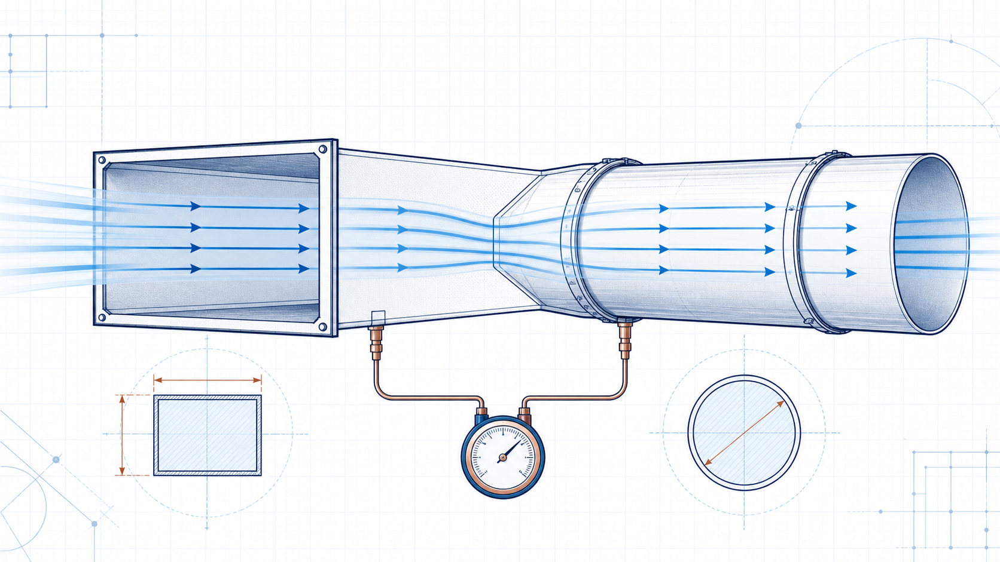

Airflow
Q = A × V
Q is volumetric flow rate, A is duct cross-sectional area and V is average air velocity.
 IndustrialCalculation Hub
Search topics, tools, articles...⌕
IndustrialCalculation Hub
Search topics, tools, articles...⌕
Existing engineering calculator
Calculate airflow, air velocity or the required duct size for circular and rectangular ducts. Use it for preliminary HVAC, industrial ventilation, dust-collection and process-air checks.

Select the unknown quantity, choose the duct shape and enter the remaining values. Results update as valid values are entered.
Engineering knowledge
Duct airflow is the volume of air that passes through a duct in a given time. The same air quantity can be expressed in m³/s, m³/hr or CFM. For a given flow, a smaller duct area produces a higher velocity; a larger duct area produces a lower velocity. These relationships are central to preliminary ventilation and duct-sizing work.
Review duct area, airflow, velocity, pressure loss, practical velocity selection and common design checks before treating a preliminary result as a final design.
Read Duct Flow Rate, Velocity and Area →The existing calculator applies the following area and continuity relations:
Q = A × V
Q is volumetric flow rate, A is duct cross-sectional area and V is average air velocity.
A = W × H
Width and height are converted from millimetres to metres before calculation.
A = πD² / 4
D is internal diameter in metres. The size mode rearranges these existing relations to find the missing dimension.
A rectangular duct that is 600 mm wide by 400 mm high has an area of 0.24 m². At 10 m/s, the existing calculation gives 2.40 m³/s, or 8,640 m³/hr. This is a useful first check, but detailed design must also examine velocity limits, fitting losses, noise and the complete system pressure requirement.
No. It calculates airflow, velocity and duct geometry only. Pressure loss requires duct length, roughness, fittings, flow conditions and a suitable loss method.
It can provide a preliminary airflow input. Final fan selection also requires total static pressure, operating density, system resistance and manufacturer performance data.
Choose the geometry that represents the actual duct. Use internal dimensions when the calculated area is intended to represent the flow passage.
This is an original educational summary. It does not reproduce book wording, tables or figures. Use current approved project data where an engineering decision depends on the result.